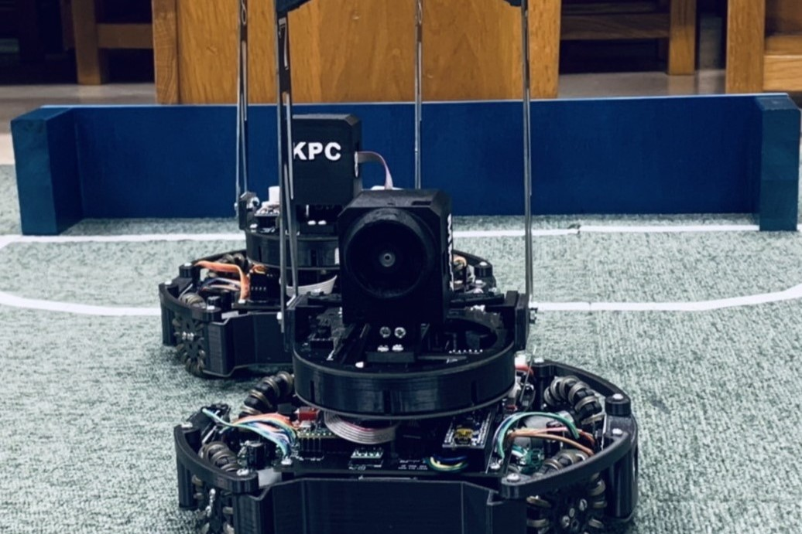
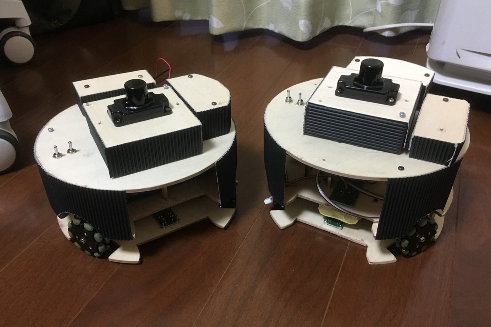
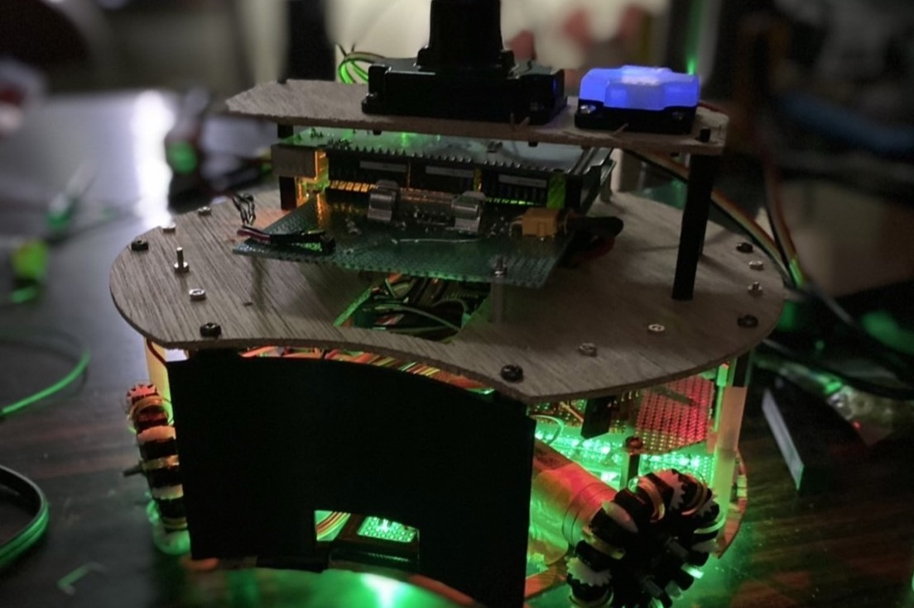
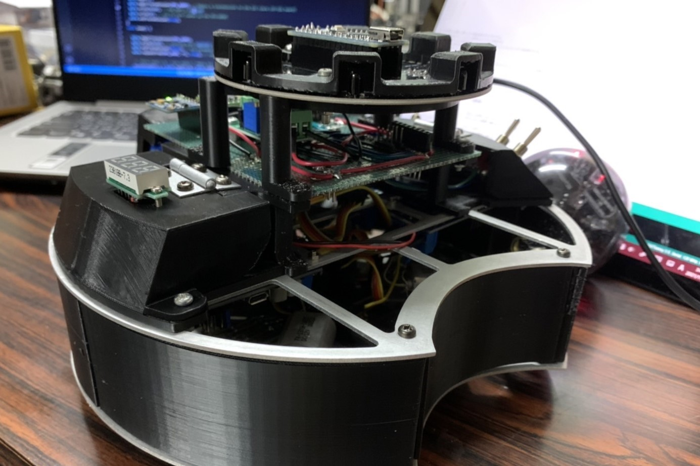
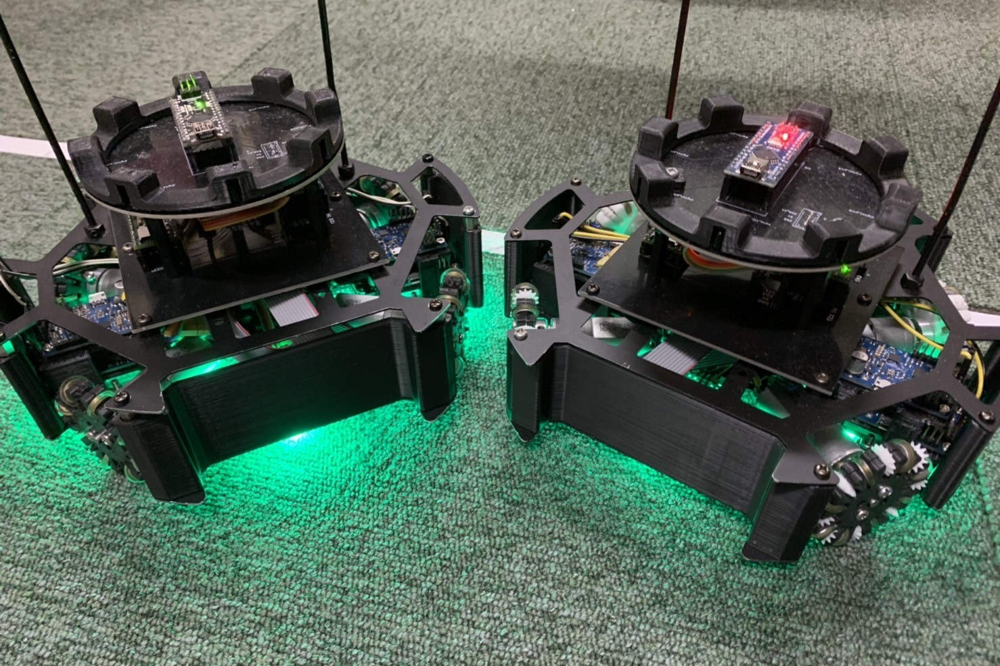
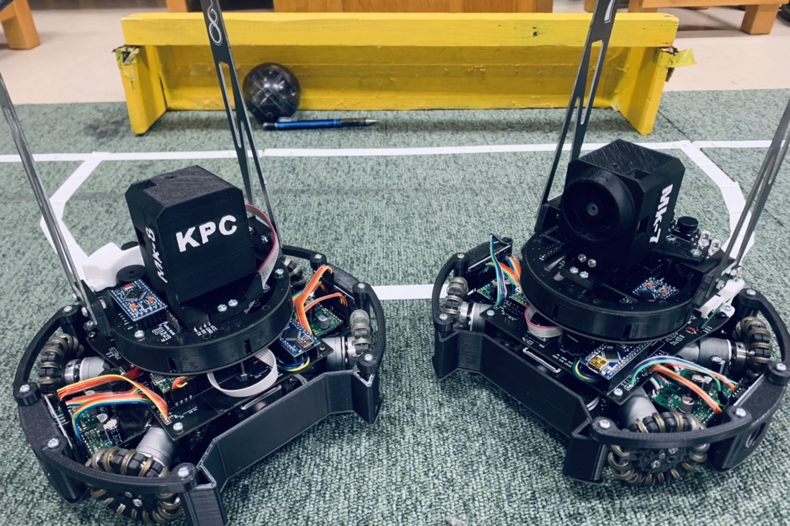

この記事では私が今まで製作に関わったロボットをまとめて紹介します。

高校1年生のときのロボットです。このロボットでは私は主にソフトを触っていたように思います。 モーター、オムニは先輩から引き継いだダイセンのものを使用し、IRセンサはmodernroboticsのIR locator 360を使っていました。 降圧回路を載せていなかったので、Lipoバッテリーをモーター用に、9V電池をロジックに使用していました。 外装は木のフレームの断面に百均の紙をボンドで貼っているだけです。(大会の時にはほとんど剥がれ落ちました)
コロナの影響で部活が本格的に始まったのが大会の3か月くらい前でした。 それまでロボットを触ったことがない人が3か月で作った機体が大会で動くわけはなく、ブロック大会では動かないゴミをコートに出すだけというとても辛い経験をしました。 ある意味、この経験が私がロボカップにのめりこむきっかけともいえます。

この機体から私がCADソフトを用いて設計をし始めました。 学校に置いてあった3Dプリンターの使用を始め、モーターもpololuの20Dを新しく購入しました。 この機体は発表会の前日までいい感じに動いて、ボールに対する回り込みも初めて実現したのですが、発表会当日は動かなかったです。 ちなみに、右上で青白く光っている部品はmodernroboticsのジャイロセンサです。

この機体はアルミのt1.5mmのレーザー加工を切断堂さんに発注し、さらに3Dプリンターで外装もがっちり作っています。 また、上のフレームと下のフレームの配線はフラットケーブル1本で完結させていたので、悪くない設計ではあったかなと思います。
このときからマイコンをArduino megaから部室に落ちていたteensy3.5に乗り換え、ジャイロセンサをGY-521モジュールに、IRセンサもtssp58038を円形に配置したモジュールに変更しました。 しかしこの機体を出そうと思っていた練習試合の当日の朝1時に盛大に煙を出して燃えました。 原因はおそらくショートだったと思います。

この機体はほとんどの基板をプリント基板としてelecrowさんに発注し、アルミフレームも軽量化のためにt1.0mmに変更しました。 動作もかなり安定していて、1か月もプログラムに時間をかけられたのでかなり良い機体だったと思います。
ちなみに、この機体の内部の左右に配置されている青いボードの部品はpololuの高いモータードライバです。 USBでPCと接続すればGUIでモーターを動かせたり、エラーを通信で読み取れたりするようですが、僕たちはほとんどそういった機能を使っていませんでした。

この機体はブロック大会が終わった後に製作を開始しました。 前機体に問題はほとんどなかったのですが、高校で最後の大会なのでやりたいことをやろうと意気込んで設計を開始し、大会の1週間前ぐらいから本格的に組み立て始めました。 だいぶ無茶をしましたが、遠目に見たときの見た目は気に入ってますし、全国大会での成績も悪くなかったので良かったです。 この機体はまだ手元にあるので、別の記事で解説をしようと思います。
振り返ってみると、僕が高校で実際にロボットを作っていた時間は1年半くらいだったようです。 まだまだ学び途中ではありますが、その過程で得られたものをこのブログに残そうと思います。